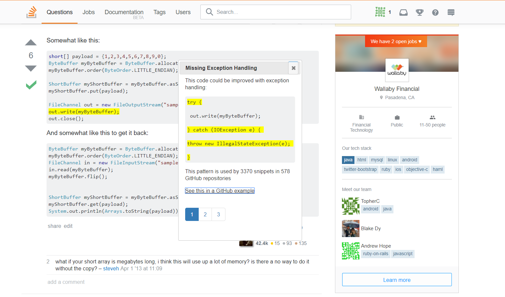

This week I made some real progress in my UI mockup; I'm almost done with hardcoding the prototype and then we can see about hooking it up to Maple on a server! However, right now I'm stuck on the trickiest part (in my opinion so far), which is to make the dialog popup show multiple solutions by letting a user see different "pages" of the dialog.
You can see what I'm getting at with this screenshot of the UI so far:

I'm using the jQuery UI library's dialog widget with Bootstrap for the pagination buttons. However, pagination in Bootstrap is generally used for actually directing the user to different web pages, not frames or divs of a dialog. Since I have limited experience with popups/dialogs, I'm still trying to determine if this is the right path to go down. I was doing more research yesterday and I think if I can make the dialog a div of divs, where each div is a different "frame" of the dialog, then I can set the inactive divs' display to "none," which effectively takes them out of the document (instead of turning visibility to "hidden," so they still take up "space" on the page). Then the pagination buttons can toggle the display of each div. I don't know if that's too hacky of a solution, but I think I might as well try it and see what Tianyi thinks of it.
In other news, on Tuesday Dr. Kim, Tianyi, and I had a Skype call with Dr. Björn Hartmann from UC Berkeley, who has some students working on a similar project from an HCI perspective. We're hoping to get some HCI feedback from them on our project, as well as generally collaborate with our findings, methods, etc. They would also be great help if they want to assist us with creating a user study for the UI once it's ready.
I have to say I'm pretty pleased with how the UI is looking so far; it's so much nicer than it was last week!